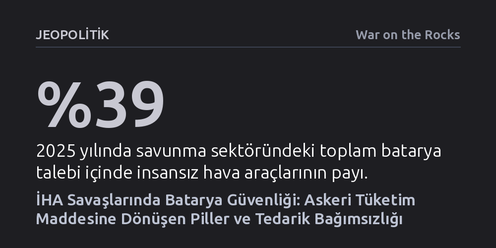

JEOPOLITIK · War on the Rocks · 2026-10-22
İHA'ların kitlesel silahlara dönüşmesi bataryaları yakıt ve mühimmat kadar kritik bir muharebe tüketim kısıtına çevirdi; ancak ordu derin bir Çin bağımlılığı yaşıyor. Çözüm; sivil pazarla uyumlu standartlar, dinamik bir stratejik batarya rezervi ve müttefik ortaklı üretim üssü kurmaktan geçiyor.
Dron savaşlarında üstünlüğün sadece yazılım veya hava araçlarıyla değil, sahada hızla tükenen ve tedariki Çin'in elinde olan bataryaların lojistiğiyle belirleneceğini gösteriyor.

Ordular yüzyılı aşkın bir süredir muharebe dayanıklılığının nihai sınırlarını akaryakıt ve mühimmat stoklarıyla belirledi. Ancak küçük insansız hava araçlarının dar kapsamlı niş keşif araçlarından çıkıp kitleler halinde tüketilen saldırı silahlarına dönüşmesi, bu kadim lojistik denklemi kökten değiştiriyor. Askeri planlamacılar, bataryalara ilk kez mühimmat ve yakıtla aynı operasyonel ciddiyetle yaklaşmak zorunda kalıyor.
Bir dron bataryası lojistik açıdan aynı anda üç farklı role bürünüyor. Tekrar kullanılabilen bir keşif İHA'sında batarya tıpkı bir yakıt gibi işlev görüyor; menzili ve havada kalış süresini belirliyor, her uçuştan sonra şarj edilmesi veya yenilenmesi gerekiyor. Kamikaze olarak adlandırılan tek yönlü saldırı dronlarında ise batarya doğrudan mühimmatın kendisiyle birlikte infilak eden tek kullanımlık bir sarf malzemesine dönüşüyor. Rafta bekletilen dolaşan mühimmatlarda (loitering munition) ise batarya, kimyasal yıpranması silahın yıllar sonra çalışıp çalışmayacağını belirleyen sınırlı raf ömrüne sahip bir bileşen niteliği taşıyor.
Bu dönüşümün tüketim ölçeği de hızla büyüyor. 2025 yılı verilerine göre savunma uygulamaları 4,3 gigavatsaatlik batarya tüketirken, bunun yüzde 39'unu tek başına insansız hava araçları oluşturdu. ABD Savunma Bakanlığı'nın İHA Hakimiyeti Programı kapsamında 2026'daki on binlerce ucuz kamikaze dron hedefinden 2027 itibarıyla 200 bin adedin üzerine çıkılması planlanıyor. Sahadaki dron sayısı yüz binleri bulduğunda batarya artık gövdenin içindeki sıradan bir elektronik parça olmaktan çıkıp birliklerin günlük muharebe tüketim hızının belirleyicisi haline geliyor.
Batarya tedarik zinciri, paketlerin bir cephe hattına ulaşmasıyla son bulmuyor. Tekrar kullanılabilir bir dron belirli bir depolanmış enerjiyle sahaya iniyor ve her sortinin ardından bu enerjinin yeniden üretilmesi gerekiyor. Bir ordunun binlerce gelişmiş drona sahip olması, eğer sahada kesintisiz bir şarj ve batarya döngüsü kurulamıyorsa, operasyonel olarak hiçbir üstünlük sağlamıyor.
Muharebe ortamında elektrik enerjisini ikmal etmek en az akaryakıt taşımak kadar zorlu bir lojistik yük oluşturuyor. İleri hatlardaki mevzilerin çoğunda şebeke elektriği bulunmuyor; kullanılan jeneratörler ise yakıt tüketmelerinin yanında yaydıkları ses, ısı ve elektromanyetik izlerle düşman unsurları için açık birer hedef haline geliyor. Aşırı sıcak ve dondurucu soğuklar lityum pillerin kapasitesini ve ömrünü hızla tüketirken, çatışmada hasar gören piller ciddi yangın ve kimyasal tehlikeler doğuruyor. Taşınamayan veya korunamayan bir şarj noktası, tıpkı vurulan bir yakıt deposu gibi bütün harekâtı felç edebiliyor.
Ukrayna savaşı, elektriğin cephede nasıl vazgeçilmez bir taktik ihtiyaca dönüştüğünü ve hızla tükenen bataryaların operasyon temposunu nasıl kısıtladığını somut biçimde ortaya koydu. Pasifik bölgesinde yaşanabilecek olası bir çatışmada ise çok daha uzun ikmal hatları, dağınık ada mevzileri ve kısıtlı nakliye kapasitesi bu yükü katbekat ağırlaştıracaktır. İkmal uçaklarında yakıt, mühimmat, su ve sensörlerin yanında binlerce bataryanın da yer kaplamak zorunda kalması, elektrik lojistiğini modern harpte zaferin belirleyicisi konumuna getiriyor.
Savunma sanayisinin bataryada karşı karşıya olduğu en büyük paradoks, pazar payının küresel ölçekte önemsiz sayılacak kadar küçük kalmasıdır. Elektrikli araçlar, şebeke depolama sistemleri ve tüketici elektroniğinin yönlendirdiği küresel batarya pazarı, askeri talebin yüzlerce katı büyüklüğünde seyrediyor. Bu nedenle savunma sektörü kendi müstakil sanayi ekosistemini kuramıyor ve Asya'daki üretim devlerinin belirlediği piyasada sadece bir fiyat alıcı konumunda kalıyor.
ABD Kongresi, 2024 Ulusal Savunma Yetkilendirme Yasası'nın 154. Maddesi ile CATL, BYD, EVE Energy ve Gotion gibi önde gelen Çinli üreticilerden batarya tedarik edilmesini Ekim 2027'den itibaren yasaklayarak sert bir sınır çizdi. Ancak nihai ürün seviyesinde getirilen bu yasaklar buzdağının sadece görünen kısmını hedefliyor. Bir batarya paketi ABD'de veya müttefik bir ülkede monte edilse bile, hücrenin içindeki anot ve katot malzemeleri, işlenmiş lityum veya grafit, elektrolit girdileri ve hatta üretim bantlarındaki ekipmanlar derinlemesine Çin sanayisine dayanmayı sürdürüyor.
ABD Hükümet Hesapverebilirlik Ofisi'nin (GAO) 2025 yılı değerlendirmesi bu yapısal körlüğü net biçimde belgeledi. Savunma Bakanlığı ana yüklenicileri ve birinci kademe tedarikçileri haritalandırabilse de tedarik zincirinin alt kademelerindeki kritik hammaddelerde neredeyse hiçbir denetime sahip değil. Tıpkı MQ-9 insansız hava aracının ana tedarikçilerinin Batı merkezli görünmesine rağmen alt katmanlarda Çin bileşenlerine bağımlı çıkması gibi, dron bataryaları da benzer bir gizli kırılganlık taşıyor.
Bu lojistik tıkanıklığı aşmak, salt daha fazla alım yaparak çözülebilecek bir mesele değildir. Yazarlar üç aşamalı bir stratejik çerçeve öneriyor. İlk adım, savunma gereksinimlerine göre uyarlanmış bir Stratejik Batarya Rezervi kurulmasıdır. Ancak bataryalar petrol veya maden cevheri gibi yıllarca depoda bekletilemez; kimyasal yapıları gereği zamanla yıpranırlar. Dolayısıyla bu rezervin, raf ömrü yaklaşan paketleri derhal tatbikatlara veya operasyonel dronlara aktaran ve yerine yenilerini koyan dinamik bir rotasyon mantığıyla işletilmesi gerekir.
İkinci kritik adım, sivil pazarın devasa üretim gücünden faydalanacak standartlaşmayı sağlamaktır. Ordu için her biri farklı boyut ve voltajda özel üretim bataryalar sipariş etmek maliyetleri fırlatırken tedarik güvenliğini zedeliyor. Yazıda da belirtildiği gibi, düşük hacimli ve özel siparişe dayalı askeri alımlar "erişilebilirlik ve güvenli tedarik önünde yapısal bir engel" teşkil ediyor. FASTBat benzeri girişimlerle standart hücre boyutları, ortak şarj arayüzleri ve ticari üretim hatları benimsenmeli; böylece müttefik ülkelerin sanayi kapasitesi ortak bir savunma derinliğine dönüştürülmelidir.
Son olarak, uzun vadeli teknolojik bağımsızlık için araştırma-geliştirme yatırımlarının yeni kimyalara odaklanması şarttır. Mevcut lityum-iyon zincirinde Çin'in elinde tuttuğu hammadde tekelini kırmak için lityum-kükürt, silikon ağırlıklı anotlar ve gelecekte katı hal pilleri gibi yeni mimarilere geçilmelidir. Bu alternatif kimyalar yalnızca jeopolitik riski düşürmekle kalmayacak; daha hafif, daha güvenli ve yüksek enerji yoğunluğuna sahip hücrelerle insansız araçların menzil ve faydalı yük kapasitesini de çarpan etkisiyle artıracaktır.